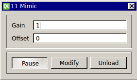

Requirements: None Limitations: None

Copies an input signal and outputs another with optional user-specified scaled gain or offset.
Note that the gain is a scalar multiplier, and the offset has the same units of the input signal.